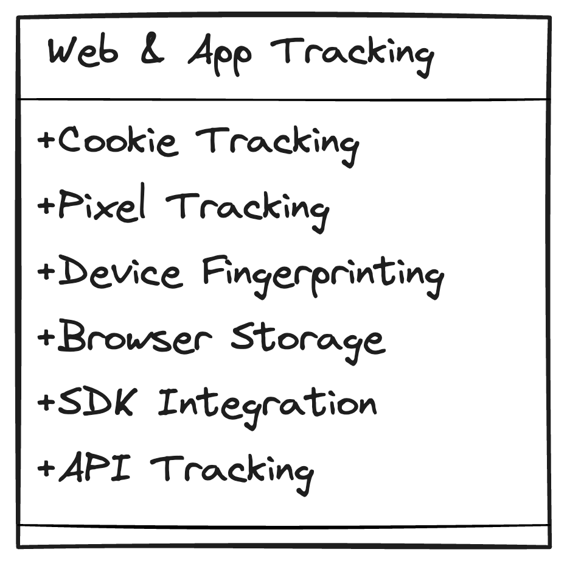
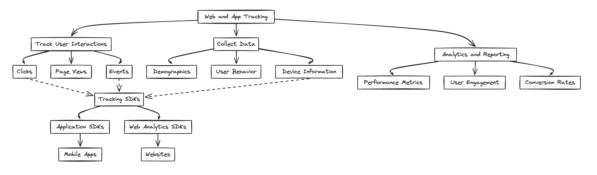
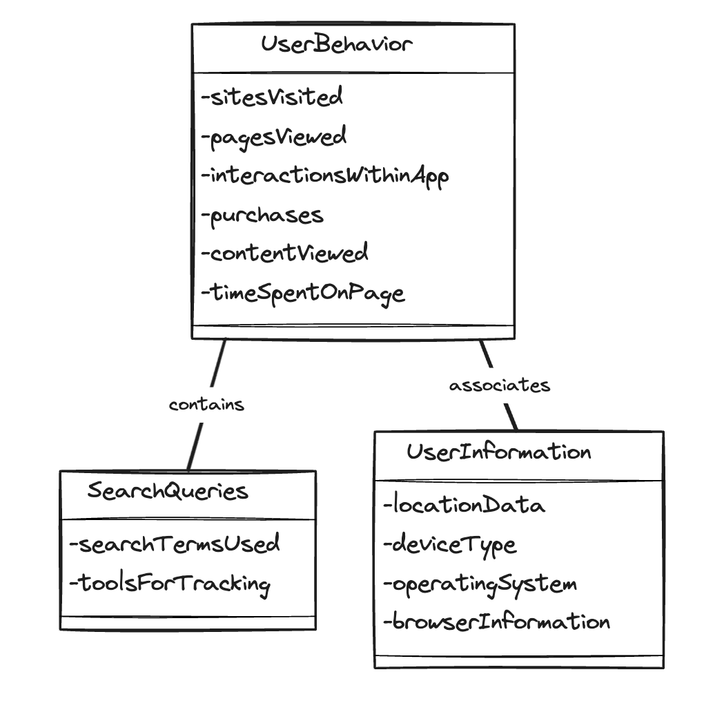
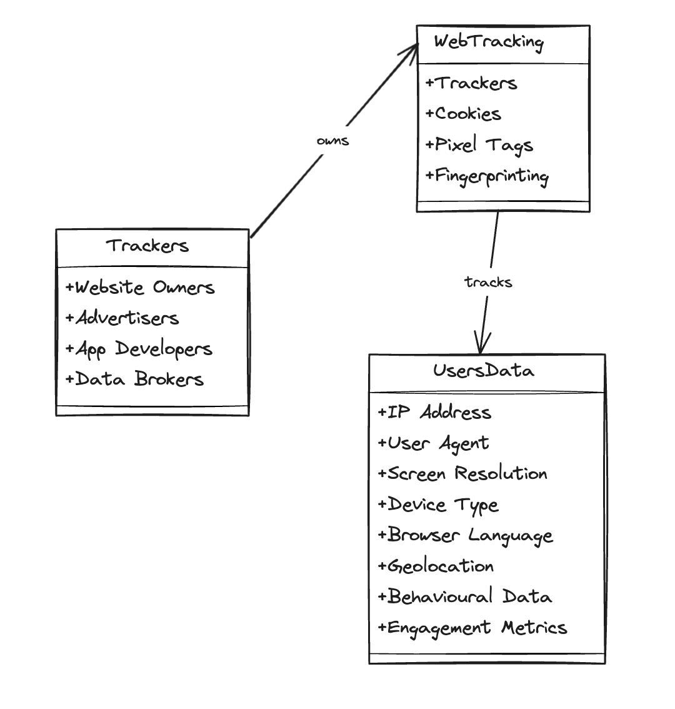
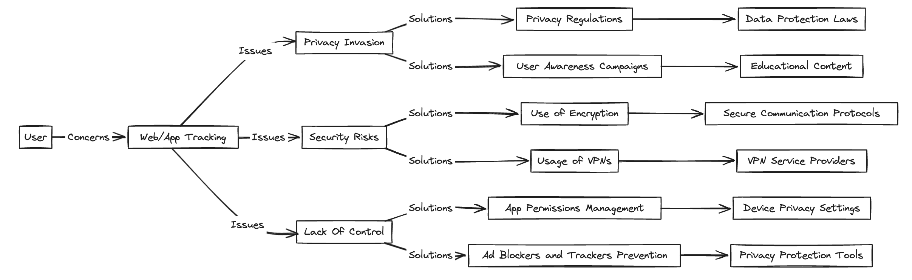
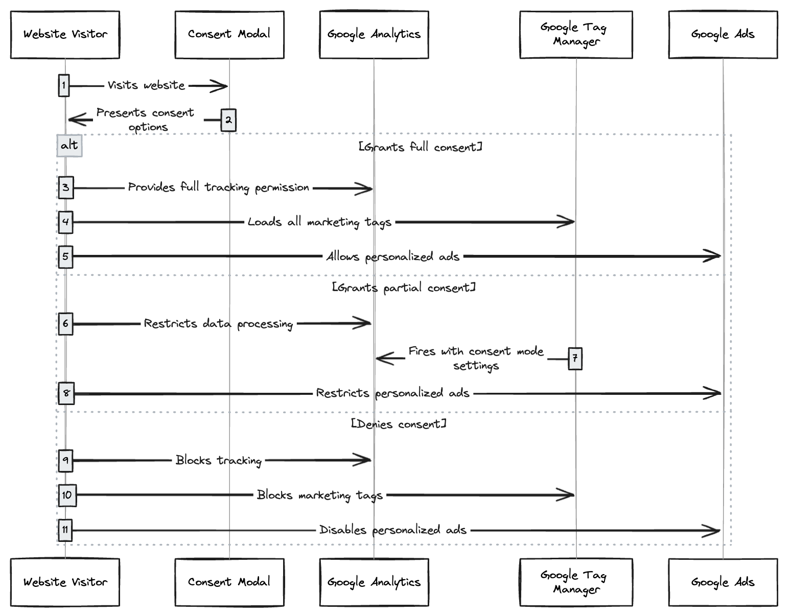

Web ve Uygulama Takibi Nedir?
Web ve uygulama takibi, yaygın olarak çevrimiçi ortamlarda ve mobil cihazlarda kullanılan bir işlemdir. Bu yazıda insanları ve işletmeleri, kullanım davranışlarını takibe iten nedenlere değineceğiz. Ardından kullanıcılar ve işletmeler için bu takip işleminin sunduğu yararları ve doğurduğu kaygıları inceleyeceğiz.

Bölüm 1: Web ve App Takibi Nasıl Çalışır?
Web ve app takibi için kullanılan bir çok araç vardır. Bunlardan bazılarına ve ne amaçla kullanıldıklarına değinelim;

Cookies(Çerezler): Web siteleri ve uygulamalar tarafından bilgisayarınıza veya mobil cihazınıza yerleştirilen küçük metin dosyalarıdır. Bu dosyalar, kullanıcı web sitesini veya uygulamayı tekrar ziyaret ettiğinde kullanıcıyı hatırlamanıza ve daha iyi bir kullanıcı deneyimi sunmanıza yardımcı olur.
Çerezler, tarayıcınız ve web sitesi arasında bilgi alışverişini(Ziyaret ettiğiniz sayfalar, Tıkladığınız bağlantılar, Giriş bilgileriniz, Tercihleriniz(örneğin dil seçeneği), vb.) sağlamak için kullanılır. Aynı zamanda bazı web siteleri, sizin tercihlerinizi takip ederek size özel içerik sunmak veya hedefli reklamlar oluşturmak için Cookie'leri kullanabilir.
Çerezler, Birinci Taraf Çerezler ve Üçüncü Taraf Çerezler olarak ikiye ayrılabilir. Birinci taraf çerezler, kullanıcıların web sitesini veya uygulamayı nasıl kullandığını takip etmek için, kullanıcıların tercihlerini kaydetmek için veya kullanıcılara kişiselleştirilmiş içerik sunmak için kullanılabilir. Üçüncü taraf çerezler ise kullanıcıların birden fazla web sitesi veya uygulamada nasıl davrandığını takip etmek için, kullanıcılara hedeflenmiş reklamlar sunmak için ve Web sitesi veya uygulama trafiğini analiz etmek için kullanılır.
Pikseller: Web ve uygulama takibinde kullanılan küçük, tek pikselli görsellerdir. Görüntülendiğinde, pikseller web sitesi veya uygulamanın sunucusuna bir istek gönderir. Bu istek, kullanıcının IP adresi, tarayıcı bilgileri ve web sitesi veya uygulamanın URL'i gibi bilgileri içerir. Bu bilgiler, kullanıcıların ilgi alanlarını ve ihtiyaçlarını belirlemek için kullanılabilir. Bu sayede hedefli reklamlar sunabilirler.
Pikseller web sitesini veya uygulamayı kaç kişinin ziyaret ettiğini ve hangi sayfaları görüntülediğini takip etmek için kullanılabilir. Aynı zamanda Pikseller dönüşümleri(kullanıcıların web sitesi veya uygulamada belirli bir eylemi gerçekleştirip gerçekleştirmediğini) takip etmek için de kullanılabilir,
Pikseller, çerezlere benzer şekilde çalışır, ancak bazı önemli farklılıklar da vardır. Pikseller, kullanıcının bilgisayarında veya mobil cihazında depolanmaz. Bunun yerine, web sitesi veya uygulamanın sunucusunda depolanırlar. Aynı zamanda, çerezlerden daha az bilgi toplar.
SDK'lar(Yazılım Geliştirme Kitleri): Veri toplamak amacıyla uygulamalara yerleştirilmiş, üçüncü taraf kodlardır(Meta, Firebase ve GA4 gibi uygulama-içi analiz tool'ları). Bu SDK'lerden bazıları için detaylı yazılar yazıyor olacağım. Bu yazıları kaçırmamak için beni X(Twitter) ve Linkedin üzerinden takip edin.
Bölüm 2: Hangi Veriler Takip Edilir?
Kullanıcı davranışları takip edilen alanların başında gelir. Ziyaret edilen siteler, görüntülenen sayfalar, uygulama içerisindeki etkileşimler, satın almalar, izlenen içerikler ve sayfada geçirilen süre gibi değişkenler bahsi geçen kullanıcı davranışlarına örnek olarak verilebilir.
Search Queries(Arama Sorguları), web sitelerinde ve arama motorlarında kullanılan arama terimleri bazı tool'ler yardımıyla takip edilebilir(Örneğin, Google'ın Search Console'u ya da site içerisinde search bar takipleri).
Kullanıcıya ait bilgiler, web sitelerinde veya mobil app'lerde kullanıcının konum verileri(Kullanıcının yaklaşık konumu, IP adresi üzerinden veya kesin konum GPS takibiyle), kullanılan cihazın türü, işletim sistemi ve tarayıcı bilgileri takip edilebilir.
Bölüm 3: Takibi Kim Yapar?
Uygulama Sahipleri, kullanıcı deneyimini geliştirmek, içeriği optimize etmek, site performansını ölçümlemek ya da ilgi alanları ve davranışlara uygun şekilde hedeflenmiş reklamlar iletmek için veri takibini kullanırlar.
Geliştiriciler, kullanıcı davranışlarını anlamak, uygulama özelliklerini geliştirmek ve ürünlerinden para kazanmak için veri takibini kullanırlar.
Veri Satıcıları, genellikle kullanıcının direkt bilgisine dayanmayarak büyük kullanıcı gruplarına ait verileri toplayıp satan kurumlar da veri takibini kullanırlar.
Bölüm 4: Web ve Uygulama Takibinin Yararları
Web ve uygulama takibi, hem kullanıcılar hem de işletmeler için bir takım faydalar sunar. Kullanıcılar için, siteler ve uygulamalar daha uygun içerikler ve öneriler sunarak kişiselleştirilmiş deneyimler sağlayabilir. Hedeflenmiş reklamcılık sayesinde kullanıcılar ilgi alanlarına karşılık gelen reklamları görme ihtimalinin artması da bir diğer faydadır.
İşletmeler açısından ise web ve uygulama takibi, ürün ve servislerde gelişmeye olanak tanır.
Geliştiriciler, kullanıcı davranışlarını analiz ederek iyileştirmeler ve yeni özellikler hakkında fikir sahibi olabilirler. Ayrıca, işletmeler eğilimleri analiz ederek ve bilinçli kararlar alarak daha iyi iş zekası elde edebilirler.
Bölüm 5: Web ve Uygulama Takibi Hakkında Kaygılar
Web ve uygulama takibi, gizlilik, veri ihlalleri ve profilleme ve ayrımcılık gibi birçok endişeyi beraberinde getiriyor. Açık rıza veya bilgi verilmeksizin kişisel verilerin toplanması ve paylaşılması, kullanıcıların mahremiyetini ihlal ediyor. Bir veri ihlali durumunda ise hassas bilgiler ele geçirilebilir ve kötüye kullanılabilir. Ayrıca, toplanan verilerin detaylı profiller oluşturmak için kullanılması, ayrımcılık ve önyargılara yol açabilir.
Consent Mode:
Google, bu endişeleri gidermek için "Consent Mode"(Onay Modu) adında bir çözüm sunuyor. Consent Mode, kullanıcılara web sitelerinin ve uygulamaların hangi tür verileri toplayabileceklerini ve nasıl kullanabileceklerini seçmelerine olanak tanır. Bu, kullanıcıların mahremiyetlerini daha iyi kontrol etmelerini ve web ve uygulama takibinin potansiyel risklerini azaltmalarını sağlar. Consent Mode hakkında daha detaylı bir yazı yazıp web sitenize nasıl entegre edebileceğinizi anlatağım bir yazı yazmayı planlıyorum, Consent mode hakkında yazacağım diğer blog yazılarımı kaçırmamak için beni X(Twitter) ve LinkedIn'de takip edin!
Consent Mode'un sunduğu bazı avantajlar: Kullanıcıların hangi tür verilerin toplayabileceklerini ve nasıl kullanabileceklerini seçmelerine olanak tanır ve kullanıcıların mahremiyetlerini daha iyi kontrol etmelerini sağlar, aynı zamanda web ve uygulama takibinin potansiyel risklerini azaltır.
Consent Mode'un bazı dezavantajları: Tüm web siteleri ve uygulamalar tarafından desteklenmiyor ve kullanıcıların her web sitesi ve uygulama için ayrı ayrı ayar yapılmasını gerektiriyor.
Sonuç: Web ve uygulama takibi, birçok endişeyi beraberinde getiriyor. Onay Modu, bu endişeleri gidermek için önemli bir adım olsa da, tek çözüm değildir. Kullanıcıların, web ve uygulama takibinin risklerinin farkında olması ve mahremiyetlerini korumak için gerekli adımları atması önemlidir.
Bölüm 6: Gizliliğinizi Nasıl Koruyabilirsiniz
Tarayıcı ayarlarında çerez ayarlarını düzenleyerek, çerezleri silerek ve "Takip Etme" isteklerini kullanarak hangi verilerin toplandığını kontrol edebilirsiniz. Reklam engelleme yazılımları ve gizlilik uzantıları kullanarak takipçileri ve reklamları engelleyebilir, veri toplama seçeneklerini kontrol edebilirsiniz. İndirdiğiniz uygulamaları dikkatle seçin ve hangi izinlere sahip olduklarını kontrol edin. Gereksiz veri paylaşımını sınırlamak için uygulama ayarlarını da inceleyebilirsiniz. Web sitelerini veya uygulamaları kullanmadan önce, kişisel verilerinizin nasıl kullanılacağı hakkında bilgi edinmek için web sitelerindeki gizlilik politikalarını okuyun.
Bölüm 7: En İyi Takip Araçları
Web Analizi:
- Google Analytics: En popüler web analizi aracıdır. Web sitesi trafiği, kullanıcı davranışı ve kampanya performansı hakkında kapsamlı veri sağlar. Google Tag Manager ile birlikte kullanıldığında daha da güçlü hale gelir.
- Matomo(Eski ismiyle Piwik): Kullanıcı gizliliğini ön planda tutan, popüler bir açık kaynak web analizi platformudur.
- Adobe Analytics: Büyük kurumlara ve karmaşık takip ihtiyaçlarına yönelik, gelişmiş bir analiz platformudur.
Mobil Uygulama Analizi:
- Firebase: Google'ın sunduğu uygulama analizi platformudur. Kullanıcı etkinlikleri, olay takibi, A/B testleri ve Crashlytics ile birlikte mobil uygulamalarınızdaki hataları ve çökmeleri takip edebilirsiniz. Aynı zamanda mobil uygulamalarınız için veritabanı olarak da kullanılabilir.
- Adjust: Mobil uygulama pazarlamacıları için özel olarak tasarlanmış bir platformdur. Uygulama yüklemelerini, yeniden pazarlamayı ve reklam performansını takip etmenizi sağlar.
- Mixpanel: Kullanıcı katılımı ve elde tutma analizine odaklanan güçlü bir uygulama analizi platformudur.
- Amplitude: Uygulama içi kullanıcı yolculuklarını daha iyi anlamak için davranışsal bir analiz platformudur.
Kullanıcı Davranışı Takibi ve A/B Testi:
- Hotjar: Kullanıcıların web siteleri ile nasıl etkileşime girdiğini görsel olarak gösteren ısı haritaları, oturum kayıtları ve geri bildirim araçları sunar.
- Crazy Egg: Hotjar'a benzer bir yapıya sahiptir. Kullanıcı davranışı izleme ve web sitesi optimizasyon araçlarını bünyesinde barındırır.
Sonuç:
Web ve uygulama takibi, internette ne yaptığınızı izlemek için kullanılan bir dizi tekniktir. Bu, ziyaret ettiğiniz web sitelerini, tıkladığınız bağlantıları, indirdiğiniz dosyaları ve daha fazlasını içerir. Takip, reklamların kişiselleştirilmesi, web sitesi ve uygulama analizleri ve güvenlik ve dolandırıcılık tespiti gibi çeşitli amaçlar için kullanılabilir. Reklamverenler, ilgi alanlarınızla ilgili reklamlar sunmak için takip verilerini kullanırken, web sitesi ve uygulama sahipleri kullanıcı davranışlarını anlamak için bu verileri kullanır. Takip ayrıca şüpheli etkinlikleri belirlemek için de kullanılabilir.
Web ve uygulama takibinin gizlilik üzerindeki etkileri arttıkça, kullanıcıların bu tür takibi kontrol etmek için daha fazla araç ve seçeneğe ihtiyacı olduğu açıktır. Web tarayıcıları ve uygulama mağazaları, kullanıcılara hangi tür takiplerin engellenebileceğine dair daha fazla kontrol sağlayan ayarlar sunmalıdır. Kullanıcıların takip verilerinin nasıl toplandığını ve kullanıldığını anlamalarına yardımcı olacak daha fazla şeffaflık ve veri koruma yasaları da gereklidir.
Web ve uygulama takibi, internetin işleyişinin önemli bir parçasıdır ve birçok fayda sağlayabilir. Ancak kullanıcıların, verilerinin nasıl toplandığı ve kullanıldığı konusunda bilinçli olması ve çevrimiçi gizliliğini korumak için adımlar atması önemlidir. Bu adımlar, web tarayıcılarında ve uygulamalarda gizlilik ayarlarını optimize etmeyi, takip karşıtı araçlar kullanmayı ve kişisel verileri paylaşırken daha dikkatli olmayı içerebilir.
Bilinçli kullanıcılar ve sağlam yasal düzenlemeler ile web ve uygulama takibinin faydaları ile kullanıcıların gizlilik hakları arasında bir denge kurmanın mümkün olduğuna inananlardanım.
Sonraki Yazılarda:
Gelecek yazılarda, bu araçlardan bazılarının nasıl kullanılacağına dair ayrıntılı bilgiler vereceğim. Her bir araçtan en iyi şekilde nasıl yararlanacağınızı ve web sitenizin veya mobil uygulamanızın performansını optimize etmek için bu araçların verilerini nasıl kullanacağınızı öğreneceksiniz.
Veri okyanusunda keşfedilecek daha birçok ada var. Bir sonraki dalışımızda görüşmek üzere!
Kaynakça:
- Google Analytics 4 Nedir ve Nasıl Kullanılır?
- Uygulama Performans İzleme ve Analiz Etme
- Mobil Uygulama Takibi
- Web Takibi
- Web Analitiği Nedir ve Nasıl Yapılır?
- Web ve Uygulama Analitiği Araçlarının Karşılaştırması
- Web Takibi ve Analitik: Kullanıcı Davranışlarını Anlama
- Google Analytics ile Uygulama Takibi Nasıl Yapılır?